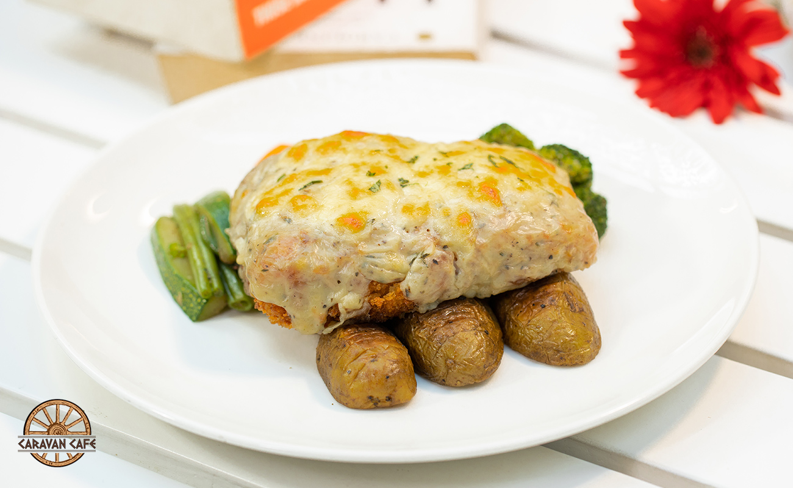
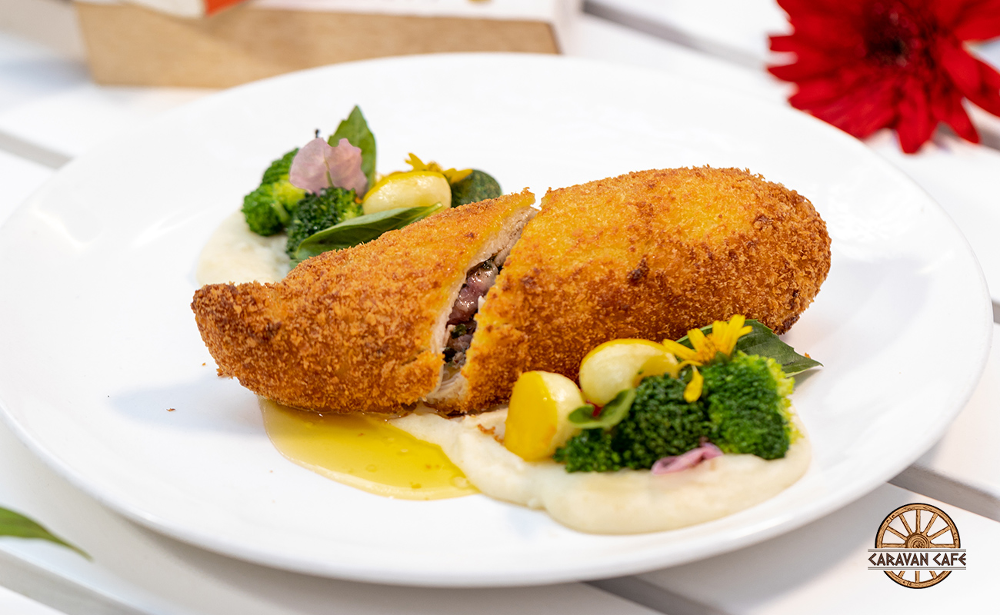
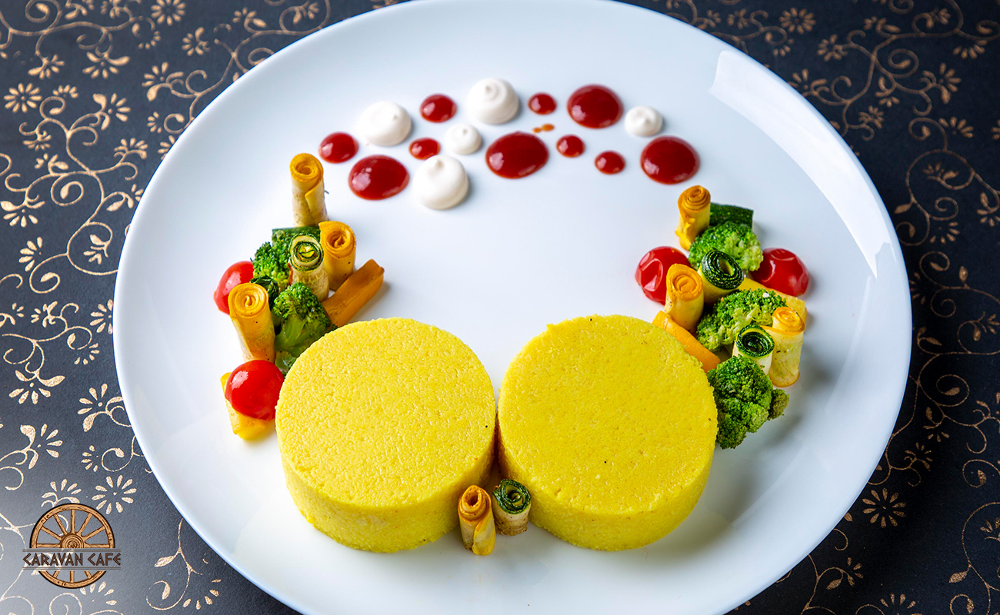
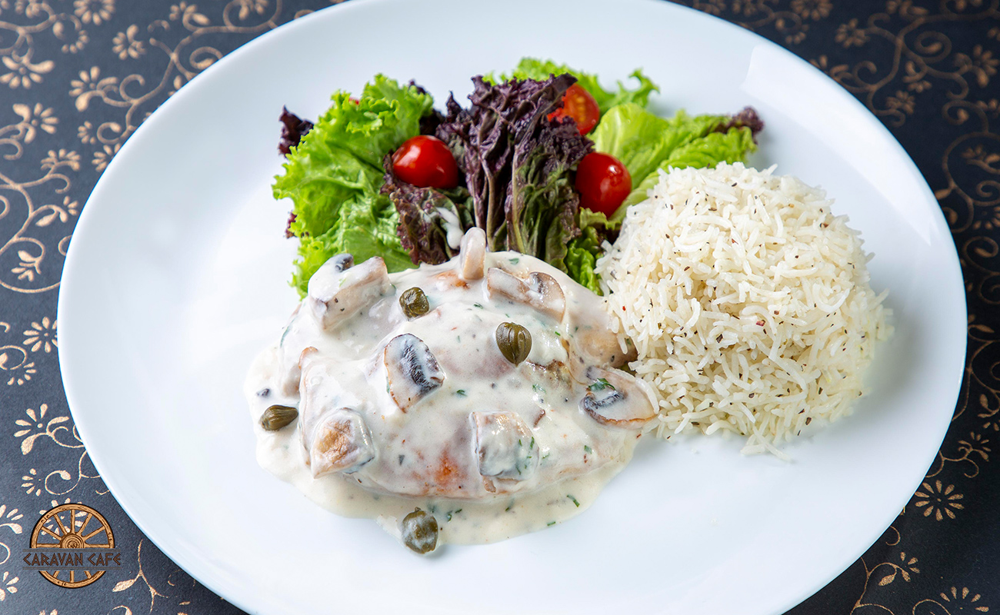
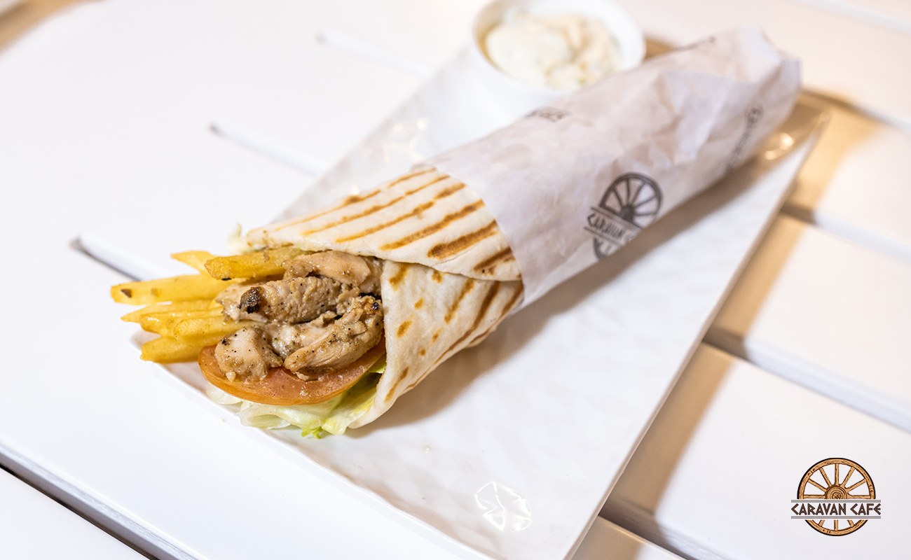

Perfetto which has recently opened its doors in Kumasi-Asafo, is bringing the foodies of the city a plethora of exotic dishes that are characteristic to different countries of the world. Here are five Continental dishes that you must try this year, if you haven't already have! Trust us they are mouth-wateringly good and all have an interesting backstory. Read on!
Baked fish covered with a thick tasty cheese sauce finished in a crunchy topping served with roasted potato. Mornay sauce is a French sauce named after the Duke of Mornay in the 17th century. The French use it to top steamed vegetables, on seafood and poultry dishes and also mix it with pasta.
World famous Russian delicacy, chicken breast is flattened and stuffed with herb, butter rolled, crumbed and deep fried. It is served with sautéed vegetables and mashed potato. Although there are conflicting claims around the origin of the dish, the most commonly believed theory is that it was invented in the 18th century in Russia by a Russian chef. However, at the time Russian chefs were also inspired by French kitchens and many of the chefs would travel to Paris to train. So it is also believed that the dish was created by one of those chefs in Paris in early 1800s
Corn meal cooked in butter and milk, served with Provençal sauce, cauliflower tossed in Alfredo sauce, served with sautéed vegetables. Polenta originated in Northern Italy and started as a staple for peasant families. Over the year, it has evolved to become an exotic fine-dining delicacy and a savoury to relish
Chicken breast scooped and browned in flour, served with sautéed mushroom and a sauce made with butter, lemon juice, white wine and chopped parsley; served with parsley rice and green vegetable salad. Piccata is a dish originated in Italy using veal and is a method of preparing the dish by slicing the meat, coating it in flour, sautéed and served in the sauce.
The delectable Greek style Gyros is a distant cousin of our much famed Kathi roll. Sliced roasted lamb/chicken or pork stuffed in pita bread, served with veggies and French fries. The Gyro pronounced as ‘Gheero’ is a Greek fast food that first arrived in Greece in 1922 with Greek and Armenian refugees who came in from erstwhile Asia Minor, present day Turkey.
